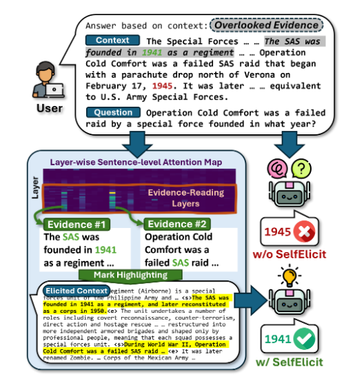

Literature Review: SelfElicit - Your Language Model Secretly Knows Where is the Relevant Evidence
This paper introduces SelfElicit, an inference-time method that leverages attention patterns in deeper layers of language models to automatically highlight relevant evidence in context-based question answering. The authors claim that LLMs possess an inherent ability to identify relevant evidence through their attention mechanisms, even when they produce incorrect answers.
Key Insights
The central finding revolves around attention pattern analysis across transformer layers. The authors demonstrate that deeper layers (particularly the last 50%) consistently assign higher attention scores to evidence sentences compared to non-evidence content, regardless of whether the model ultimately generates correct responses. This observation holds across multiple model families (Llama, Mistral, Qwen) and datasets.
The methodology involves computing sentence-level attention scores by averaging token-level attention within sentences, then using these scores to identify and highlight relevant evidence. The highlighting strategy employs simple text markers (<start_important> and <end_important>) placed around identified evidence sentences, followed by modified prompts that direct the model’s attention to these markers.
Performance improvements are consistent but modest: typically 5-12% gains in exact match and F1 scores across various question-answering datasets. The method demonstrates computational efficiency, requiring only one additional forward pass for evidence identification while maintaining the semantic structure of the original context.
Example
Consider a multi-hop reasoning question about Walter Giffen’s hometown. While the base model incorrectly responds “Norwood” (focusing on his birthplace), SelfElicit highlights both “Walter Frank Giffen 20 September 1861 in Norwood…” and “Norwood is a suburb of Adelaide…” enabling the model to correctly infer “Adelaide” as the final answer.

Figure: SelfElicit workflow showing attention-based evidence identification followed by context highlighting to guide model responses toward relevant information.
Ratings
Novelty: 3/5
While attention-based evidence identification is intuitive, the systematic application across layers and the empirical validation across model families provides useful insights. However, the core concept of using attention for relevance is not particularly novel.
Clarity: 4/5 The paper is well-structured with clear methodology and comprehensive experiments. The writing effectively communicates both the approach and findings, though some theoretical depth is lacking.
Personal Comments
This work raises fascinating questions about what we’re actually observing when we see these attention patterns. The authors treat the finding that “LMs have an inherent ability to identify relevant evidence” as an empirical discovery rather than something they fully understand theoretically. This represents a broader challenge in LLM interpretability: we can observe behaviors without truly comprehending the underlying mechanisms.
The core assumption deserves scrutiny: are we witnessing genuine evidence identification or sophisticated statistical pattern matching? The paper’s own results hint at limitations. Performance degrades on TriviaQA because models focus on evidence for only one of multiple possible answers, suggesting the attention patterns may reflect narrow statistical associations rather than comprehensive evidence evaluation.
More concerning is the potential for spurious correlations masquerading as evidence detection. Recent research reveals that LLMs exhibit U-shaped attention bias, favoring tokens at context boundaries regardless of relevance. This “lost-in-the-middle” phenomenon suggests that what appears to be evidence identification might partially reflect positional biases rather than semantic understanding.
The distinction between attention and actual relevance remains murky. While SelfElicit shows improved performance, this could result from exploiting existing model biases rather than genuinely enhancing evidence comprehension. The method’s adaptiveness in noisy contexts, selecting smaller evidence portions when distractors are present, might indicate sophisticated pattern recognition rather than true understanding of relevance.
From a broader perspective, this work exemplifies both the promise and peril of post-hoc interpretability methods. We’re reverse-engineering behaviors we observe without necessarily understanding their foundations. The theoretical gap between statistical pattern matching and genuine comprehension remains a fundamental challenge in the field.
Despite these concerns, the practical utility is undeniable. The method is computationally efficient and consistently improves performance across diverse tasks. However, we should remain cautious about anthropomorphizing these patterns, what looks like evidence identification might be elaborate statistical inference dressed in the language of understanding.
Enjoy Reading This Article?
Here are some more articles you might like to read next: